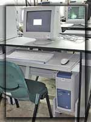

| Computer
Facilities and Operations : Updates
New
PC Workstations
By:Irwin
S. Jurilla
In
the last month of May, there were new PC deliveries to replace
the old clone PCs from the laboratories. The first batch of
new PCs purchased were Acer Pentium 4 2.66 GHz Processor,
512MB Memory, 40GB Hard Disk Drives and installed with optical
mouse. Computer laboratory J212 has a higher hardware requirement.
It requires a Pentium 4 3.06 GHz Processor, 1GB Memory, 3
x 40GB Hard Disk Drives with CD-ROMs and a CD writer.
The Acer computer units will replace the old computer units at:
M306 - 43 Units
V313 - 31 Units
G404 - 57 Units
SJ212 - 23 Units
The second batch of PCs of HP-Compaq brand will be delivered somewhere in the first week or
second week of July. The units will be deployed at:
L212 - 18 Units
J314 - 36 Units
V505 - 13 Units
New
Anti-Virus for PCs
and Servers
By:Irwin
S. Jurilla
For this school year, DLSU-Manila together with the rest of DLS schools will be having Office
Scan of Trend Micro as its new Anti-Virus. The AV license contract will be good until the end
of SY 2005-06. The AV supports Microsoft Windows 9x/NT4/2000/2003. It uses less CPU utilization
when scanning for viruses. Also, it quarantines, renames, deletes or sends information to Trend
Micro when a virus is detected. To protect the email server, Office Scan has ScanMail for Exchange.
This AV has anti-spam and gateway protection features.
New
Internet Service Providers
By:Irwin
S. Jurilla
There are two Internet Service Providers who were contracted to provide Internet connection
for the SY 2004-05. These are Meridian Telekoms and Pacific Internet. Meridian Telekoms supplied
7 x E1 Internet bandwidth while 5 x E1 link is provided by Pacific Internet. Each E1 has a bandwidth
equivalent to 2.04Mbps.
The Internet bandwidth is distributed to other De La Salle Schools like DLS-CSB, DLS-Zobel,
DLS-Dasmariñas,
DLS-Araneta and DLS-Canlubang. Also provided with Internet link is RCBC-GSB under
DLS-PSI.
Additional
Uninterrupted
Power Supply (UPS) Units
By:Irwin
S. Jurilla
This
first term of the school year, additional UPS will be installed
at CFO. The UPS will have the capacity of 16kVA N+1 feature.
This will augment the existing APC UPS with 12kVA N+1 capacity.
The coming UPS will ensure availability of power during outages
and brownouts. Critical hardware units will benefit most of
this implementation; thus providing continued services to
users.
Additional
Servers
By:Irwin
S. Jurilla
Two new servers will be purchased to upgrade the server facilities at CFO. Both will have a
4-way CPU configuration. These dense rack-mountable servers save more footprint in floor space.
This will allow to accommodate additional server units in future installations.
Additional
Wireless Access Devices
By:Irwin
S. Jurilla
Additional wireless access devices are strategically installed at the lobbies of SJ, CCS, Velasco
Ground Floor, GSB and Conservatory areas, University Library and near LS229. These units will
augment the present wireless installation. The additional number of wireless devices is 50.
The wireless access client can be borrowed from the University Library.
|